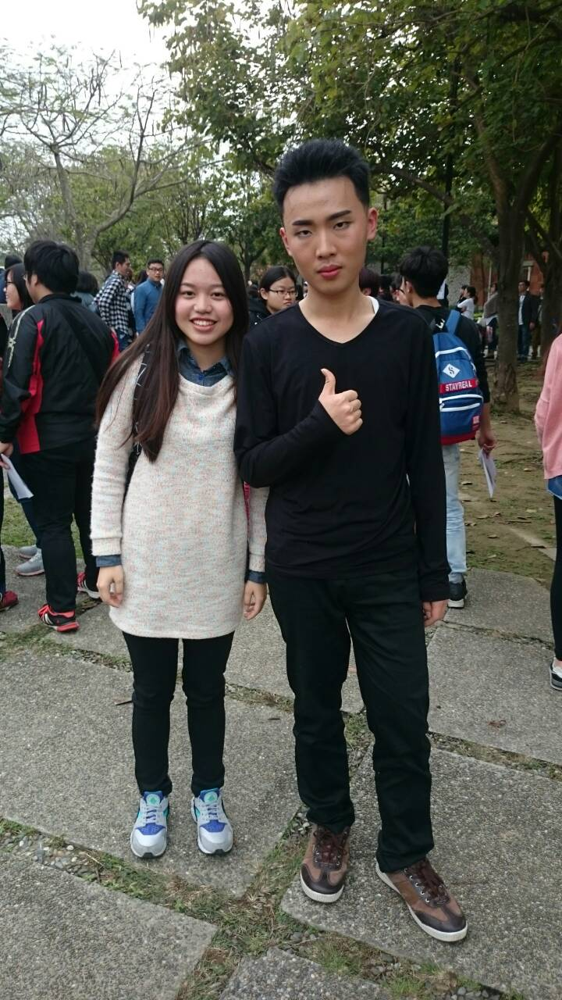
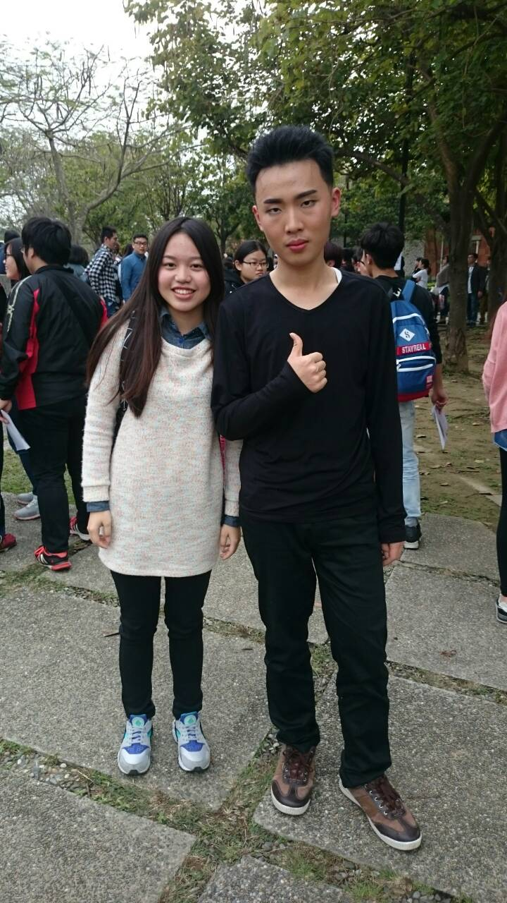

吳峻宇 Danny-Wu
大家好我叫吳峻宇!! 我來自嘉義 我相信人之所以能 是相信所能 我喜歡挑戰 每個人心中都有極限 他可能是你的榜樣 你的對手，甚至他就是你自己 面對他 挑戰他 超越他
I have high energy in doing the things that I like such as work out. I go to gym five days a week that is because I am passionate and like it.
經驗
參與草草戲劇節的演出
我喜歡戲劇喜歡站在舞台上的感覺，在台上我可以很自然地做自己，每次的演出都讓我感動不已，那種發自內心的把自己的故事演給觀眾看，感覺是非常踏實且純真的
擔任過話劇社社長
這是我高中以來職責最大的挑戰，我要學會如何與人溝通以及如何管控整個社團，雖然非常辛苦但都是值得，我也從中學習如何辦活動與如何與他人社交的能力
學歷Education
Sept .2008 ~ Jun 2013
嘉義市立志航國小
Sept .2013 ~ Jun 2015
嘉義市立民生國中
Sept .2015 ~ Jun 2017
國立嘉義高中
技能
- 創世基金會街頭募款
- 第八屆草草戲劇節 <春膳>擔任演員
- 嘉義高中話劇社擔任社長一職
- 大愛電視台擔任攝影實習生
興趣
Apart from being a web developer, I enjoy most of my time being outdoors. In the winter, I am an avid skiier and novice ice climber. During the warmer months here in Colorado, I enjoy mountain biking, free climbing, and kayaking.
When forced indoors, I follow a number of sci-fi and fantasy genre movies and television shows, I am an aspiring chef, and I spend a large amount of my free time exploring the latest technolgy advancements in the front-end web development world.
Awards & Certifications 希望我可以拿到拉
- Google Analytics Certified Developer
- Mobile Web Specialist - Google Certification
- 1st Place - University of Colorado Boulder - Emerging Tech Competition 2009
- 1st Place - University of Colorado Boulder - Adobe Creative Jam 2008 (UI Design Category)
- 2nd Place - University of Colorado Boulder - Emerging Tech Competition 2008
- 1st Place - James Buchanan High School - Hackathon 2006
- 3rd Place - James Buchanan High School - Hackathon 2005
著作Publications
| 出版年 | 作者 | 論文名稱 | 期刊 | 卷期 | 頁碼 |
|---|---|---|---|---|---|
| 2017 | 林頌堅 | 以開放資料的教師學術專長彙整表為基礎之學科標準分類分析 | 教育資料與圖書館學 | 第五十四卷第一期 | 69~95 |
| 2015 | 林頌堅 | 利用文字內容主題特徵與機器學習方法探討MIS相關期刊在ISI資料庫上的主題分類 | 教育資料與圖書館學 | 第五十二卷第三期 | 269~298 |
| 2014 | 林頌堅 | 資訊科學期刊的主題分布與多樣性研究 | 圖書資訊學研究 | 第九卷第一期 | 171~200 |
| 2014 | 林頌堅 | 以主題模型方法為基礎的資訊計量學領域研究主題分析 | 教育資料與圖書館學 | 第五十一卷第四期 | 499~523 |
| 2013 | 林頌堅 | 利用網路結構分析的研究主題視覺化 | 教育資料與圖書館學 | 第五十卷第四期 | 565~596 |
| 2012 | 林頌堅 | 資訊傳播學領域的研究主題發展分析 | 資訊傳播研究 | 第二卷第二期 | 1~20 |
| 出版年 | 作者 | 論文名稱 | 期刊 | 卷期 | 頁碼 |
|---|---|---|---|---|---|
| 2010 | 林頌堅 | 利用自組織映射圖技術的研究主題視覺呈現及其在資訊傳播學領域的應用 | 圖書資訊學研究 | 第五卷第一期 | 23~49 |
| 2010 | 林頌堅 | 以詞語共現網絡分析探勘資訊傳播學領域的研究主題與關係 | 圖書資訊學研究 | 第四卷第二期 | 123~148 |
| 2008 | 林頌堅 | 以內容特徵為基礎的網路影像檢索系統及相關技術的探討 | 台北市立圖書館館訊 | 第二十五卷第四期 | 12~33 |
| 2008 | 林頌堅 | 從網站流量資料探討使用者的網路使用行為 | 圖書資訊學研究 | 第二卷第二期 | 39~60 |
| 2008 | 高世樺、林頌堅 | 部落格使用者的資訊行為特徵研究 | 圖書館學與資訊科學 | 第三十四卷第一期 | 62~77 |
| 2007 | 陳玫吟、林頌堅 | 運用專利分析探討3D電腦繪圖技術之發展 | 圖書資訊學研究 | 第二卷第一期 | 123~148 |
| 2006 | 林頌堅 | 資訊需求與資訊科技的擁有與使用之關聯分析 | 圖書館學與資訊科學 | 第三十二卷第二期 | 42~54 |
| 2006 | 蘇昱霖、林頌堅 | 我國證券市場內個別投資者之資訊行為 | 圖書館學與資訊科學 | 第三十二卷第二期 | 93~104 |
| 2005 | 林頌堅 | 索引典之自動化建置與視覺化 | 圖書與資訊學刊 | 第五十五期 | 33~50 |
| 2005 | 林頌堅 | 自動化研究主題探勘方法及其在計算語言學之應用 | 教育資料與圖書館學 | 第四十二卷第四期 | 523~544 |
| 2004 | 陳玫吟、林頌堅 | 建構專利發明人之專利、學術與專業表現關連脈絡－以Pixar動畫製作公司為例 | 圖書資訊學刊 | 第二卷第二期 | 125~150 |
| 2004 | 林頌堅 | 基於術語抽取與術語叢集技術的主題抽取 | International Journal of Computational Linguistics and Chinese Language Processing | 第九卷第一期 | 1~16 |
| 2003 | 林頌堅 | 基於詞語抽取的圖書與資訊學刊研究主題分析 | 圖書與資訊學刊 | 第四十七期 | 15~35 |
| 2002 | 林頌堅 | 圖書與資訊學刊論文的高頻詞語抽取與分析 | 圖書與資訊學刊 | 第四十二期 | 15~28 |
| 2001 | 林頌堅 | 基於使用者經驗的花卉資訊檢索系統 | 資訊傳播與圖書館學 | 第八卷第二期 | 53~63 |
我的夢想 I have a dream
我希望我能為自己拍出一部紀錄片記錄自己的生活，分享每天的點點滴滴讓自己的後代都可以看到我的生活
 
